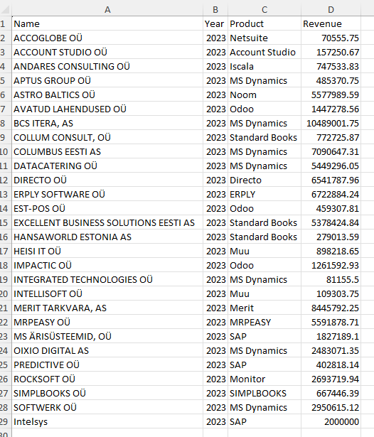
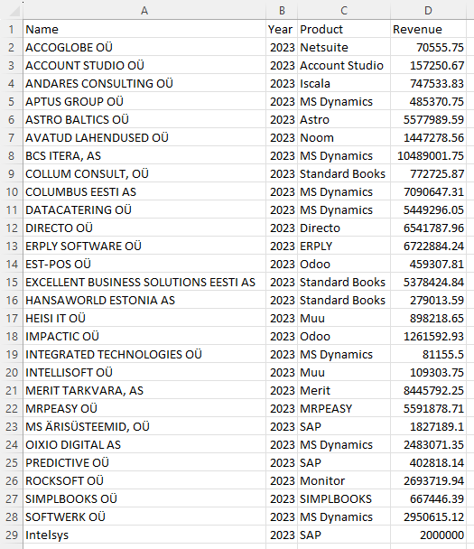
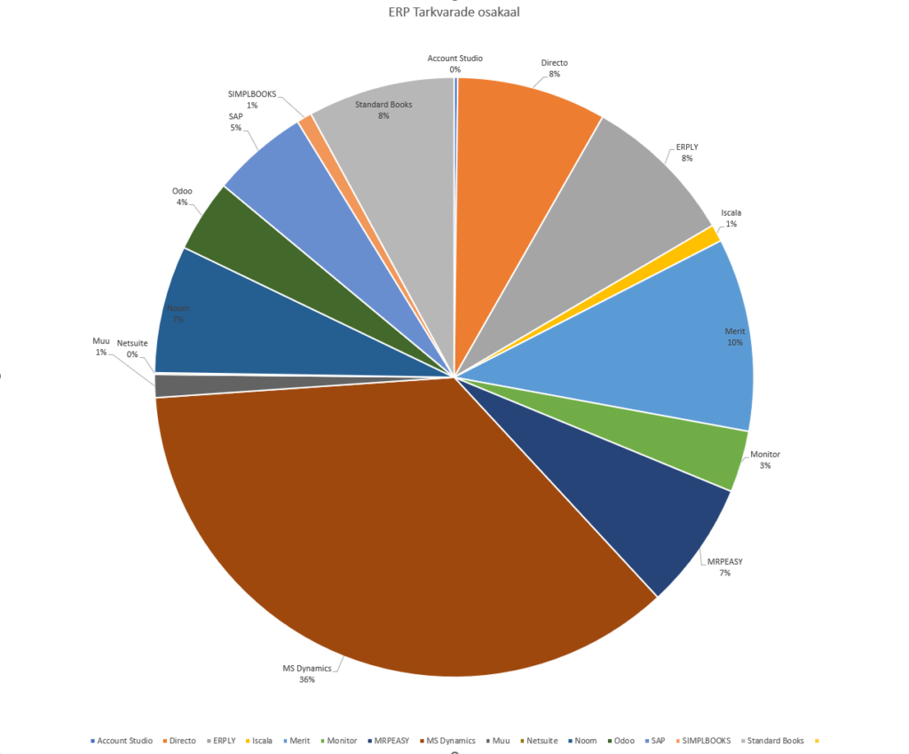

Hiljuti tuli mulle meelde, et kunagi ehitasin ma ühe väikese programmi, mis suutis võtta EMTA lehelt kõik nende avaldatud excelid ja need andmebaasi salvestada.
Kuna ma tegelen ise igapäevaselt Microsoft Dynamics 365 Business Centrali juurutamise ja arendamisega, siis mõtlesin, et teen endale väikese analüüsi kui suur üldse Eesti ERP tarkvarade konsultatsiooni turg on ning milline on erinevate tarkvarade osakaal.
Eesti ERP tarkvara konsultatsiooni turu suurus 2020-2023

Kõik need valimisse sattunud ettevõtted minu teada tegelevad kas ERP tarkvara tootmise, müügi, juurutuse vms sellise tegevusega. Kindlasti on neil ka muid teenuseid, kuid minu teada põhiline osa on ERP.
Eestis on veel suuri pakkujaid, keda ma kuidagi ei osanud siia panna nagu näiteks Fuij Eesti, Avalanche Labratories, CGI Eesti AS, Riigi tugiteenused (Tallinna Linnvalitsus, ministeeriumid, haigekassa ja üldse vist kogu riigi raamatupidamine peaks töötama SAP ERP’i peal minu teada). Põhjuseks miks ma ei osanud neid siia panna, on see, et ma ei tea kui suur osa nende käibest tuleb ERP’st ja kui suur osa mujalt.
Samuti on kindlasti ka mitmeid väiksemaid ettevõtteid, keda ma ei tea ja ei osanud seega ka siia lisada.
Ehk siis kokkuvõtvalt tõenäoliselt on turg suurem kui see tabelis praegu näha olev number.
Samuti tuleb siit tabelist välja, et turg on viimastel aastatel päris jõudsalt kasvanud, 2020->2023 kasv on olnud 75%. See näitab, et Eesti ettevõtted investeerivad digitaalsetesse lahendustesse päris suure mahuga.
ERP tarkvarade osakaal Eesti turul 2023 aastal
Teiseks huvitas mind, et millistes ERP tarkvaradel on kui suur turuosakaal. Selleks panin ma kõigile ettevõtetele taha, et millist tarkvara nad põhiliselt pakuvad ja sain sellise tulemuse.

Need kõik pirukale pannes, on pilt selline:

See on täiesti mitte teaduslik ja umbmäärane mõõtmine ja ma kindlasti panin mitmes kohas mööda pakutavate tarkvaradega. Aga loodetavasti annab see pildi, et milliseid ERP tarkvarasid Eesti ettevõtted kasutavad. Paljud Eestis asuvad suurte väljamaa korporatsioonide tütarettevõtted kasutavad SAP ERP tarkvara, aga nende tugi tuleb ka välismaalt ja need üldiselt Eesti ERP turgu kuidagi ei mõjuta.
Nagu näha, siis MS Dynamics on 36% koguturust, mis on minu jaoks väga hea uudis, kuna see tähendab, et ma tegelen kõige populaarsema tarkvaraga siinsel turul.